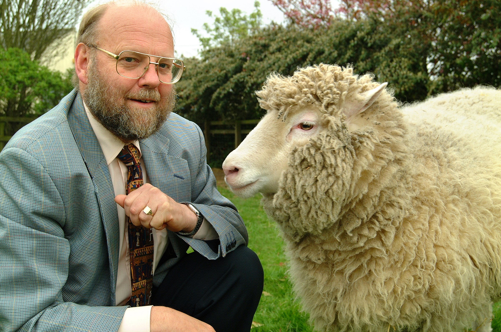
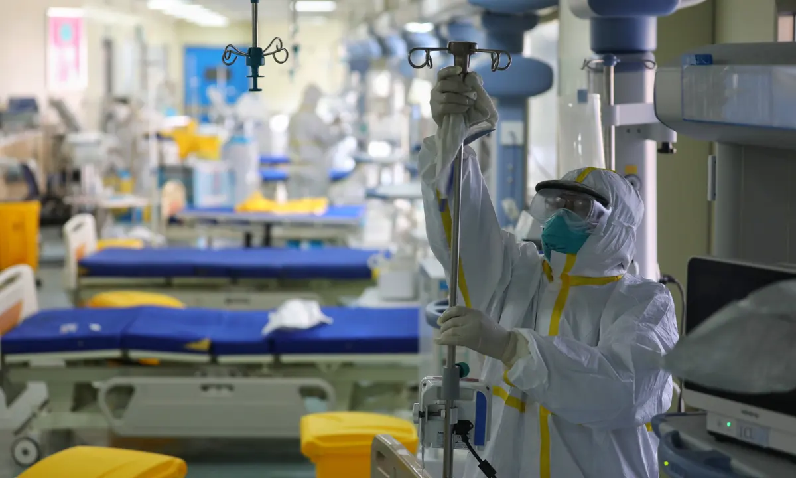
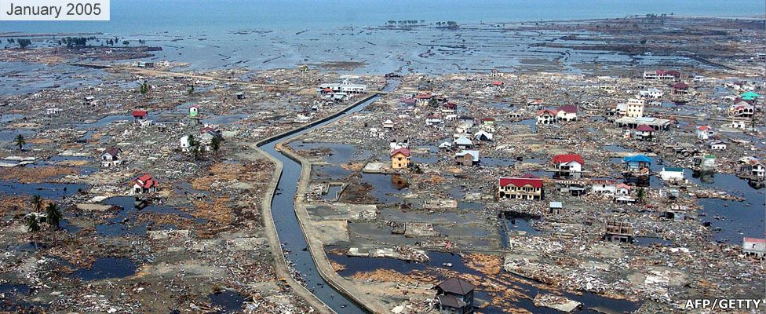

July 5, 1996 - Professor Ian Wilmut leads a research team to produce the first cloned mammal - a lamb named Dolly [Photo courtesy of the Roslin Institute, University of Edinburgh, UK.] April 24, 1990 - The Hubble Space Telescope is launched into space, aboard the Space Shuttle Discovery [image source : ESA/Hubble (SpaceTelescope.org)] August 31, 1997 : Diana, Princess of Wales, dies in a car crash [image source : en.wikipedia.org] Israel and the Palestinian Liberation Organization(PLO) sign the Oslo Accords [image source : en.wikipedia.org] 7 April to 15 July 1994 : Rwandan Genocide; members of the Tutsi ethnic group are slaughtered by extremists of the Hutu ethnic group.[image source :www.bbc.com] 1994: Genetically modified food start getting sold [image source : OTICKI/SHUTTERSTOCK.COM ]

2020 : COVID-19 takes over the world[image source : Li Ke/EPA]

Dec 26,2004 : The Indian Ocean tsunami kills close to a quarter of a million people [image source :www.bbc.com ]